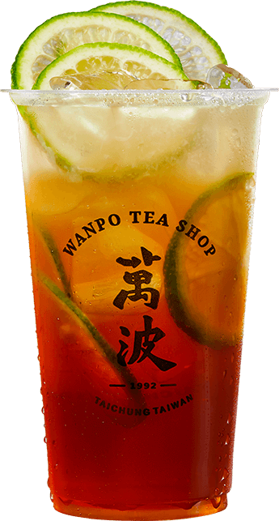
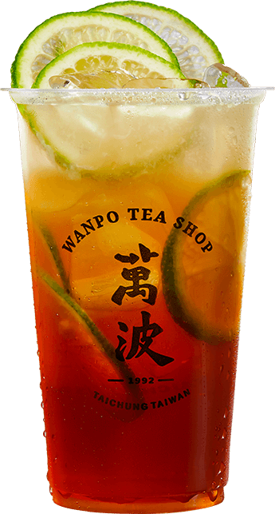

WANPO STORY
『轉進巷子之後，你會看到一個磚紅色大門，門口有一顆針葉樹，那個就是我家』
在那個沒有導航的年代，每當坐計程車回家，我都是這樣跟司機說我在眷村的家。對了，當時的計程車還是暗紅色的。
這個島嶼千千萬萬的故事，都隨著海洋的靜美萬萬不息，浪波迴盪。
在台灣，每個眷村，都有著關於一杯茶的故事。
從小，我就在瀰漫著酸酸甜甜的氣息中長大成人。眷村是一個大社區，鄰居說著各地口音，有著不同的生活習慣和口味。
我的童年回憶在這裡穿梭，而來自各地的阿姨鄰居們也都在鳴光商行客串，買了一杯愛玉檸檬，消磨一下午嘮嗑時光。
萬波，想讓這風味傳唱下去。

QUALITY / 品質
萬波每一步都堅持從茶園到茶店產地直送。從摘選，焙茶，補火，煮製，釋放難得一見的經典茶香，萬波將40 年代的匠人精神發揮在手搖茶店中。對於萬波來說，遵循古法「煮茶」才能詮釋真正的茶的美學，掌握特性與適當的沖泡手法，並讓精挑細選的配料建築在古早味之中，突顯出不同茶品其獨特的口感與香氣。

SERVICE / 服務
萬波每一步都堅持從茶園到茶店產地直送。從摘選，焙茶，補火，煮製，釋放難得一見的經典茶香，萬波將40 年代的匠人精神發揮在手搖茶店中。對於萬波來說，遵循古法「煮茶」才能詮釋真正的茶的美學，掌握特性與適當的沖泡手法，並讓精挑細選的配料建築在古早味之中，突顯出不同茶品其獨特的口感與香氣。

QUALITY / 品質
萬波每一步都堅持從茶園到茶店產地直送。從摘選，焙茶，補火，煮製，釋放難得一見的經典茶香，萬波將40 年代的匠人精神發揮在手搖茶店中。對於萬波來說，遵循古法「煮茶」才能詮釋真正的茶的美學，掌握特性與適當的沖泡手法，並讓精挑細選的配料建築在古早味之中，突顯出不同茶品其獨特的口感與香氣。